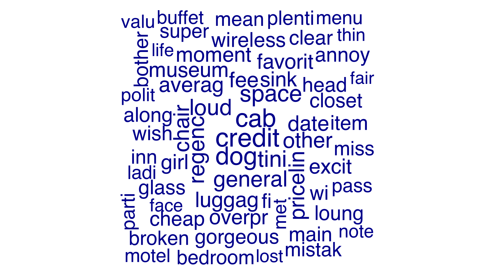

Objetivos: (i) identificar tópicos que explicam positividade/negatividade; (ii) encontrar sinais linguísticos que diferenciem avaliações verdadeiras de falsas; (iii) traduzir tudo em ações de marketing e moderação. Todas as decisões são data‑driven.
| deceptive | polarity | n |
|---|---|---|
| truthful | positive | 400 |
| deceptive | negative | 400 |
| deceptive | positive | 400 |
| truthful | negative | 396 |
Leitura: a distribuição serve como 'baseline' de acurácia de um classificador ingênuo (sempre escolher a classe majoritária). Neste conjunto, a baseline de acurácia (maioria) é de 50.1%; qualquer modelo deve superar (teoricamente) um resultado similar a uma coin toss
| documentos | chars_mediana | chars_p95 | palavras_mediana | palavras_p95 |
|---|---|---|---|---|
| 1596 | 700 | 1690 | 128 | 312 |
Leitura: mediana e P95 de caracteres/palavras indicam cauda longa (textos extensos), justificando TF‑IDF e regularização na modelagem para mitigar termos oportunistas.
| etapa | n_docs | n_termos |
|---|---|---|
| DFM inicial | 1596 | 6477 |
| Após remover certos termos (hotel/source) | 1596 | 6477 |
| Após corte usando hapax + ubiquidade | 1596 | 3102 |
Racional: remoção de termos evita vazamento de rótulo; trimming corta ruído. Reduzimos o vocabulário em 52.1% aparentemente s/ perder mta cobertura
Nuvem de palavras (após limpeza):
Leitura: a nuvem é útil para inspeção rápida, mas pode destacar termos frequentes pouco úteis. Por isso validamos relevância com TF‑IDF/Keyness.
| rank | feature | frequency | docfreq |
|---|---|---|---|
| 1 | credit | 57 | 35 |
| 2 | cab | 55 | 41 |
| 3 | dog | 54 | 36 |
| 4 | space | 50 | 41 |
| 5 | tini | 49 | 41 |
| 6 | loud | 48 | 41 |
| 7 | regenc | 47 | 39 |
| 7 | general | 47 | 41 |
| 9 | other | 46 | 41 |
| 9 | chose | 46 | 41 |
Nuvem refinada (remoção data‑driven de termos pouco discriminativos):

Removemos automaticamente 36 termos de alta frequência e baixa discriminação (p≥0,20 em keyness para autenticidade e para polaridade). A remoção é apenas visual; o modelo usa o corpus completo já limpo.
TF‑IDF — deceptive vs truthful:
| group | top8 |
|---|---|
| deceptive | dog, regenc, televis, massag, excit, children, favorit, counter |
| truthful | pricelin, cab, credit, tini, closet, cancel, chair, general |
Leitura: termos em ‘deceptive’ sugerem linguagem genérica/superlativa; em ‘truthful’, menções a elementos específicos do serviço/quarto. Estes indícios alimentam a priorização de moderação (triagem).
TF‑IDF — positive vs negative:
| group | top8 |
|---|---|
| negative | credit, tini, loud, general, broken, cancel, luggag, inn |
| positive | favorit, museum, gorgeous, awesom, comfi, buffet, cozi, north |
Leitura: positivos destacam conforto/atendimento/valor; negativos tratam de ruído, limpeza, cobranças e atritos de processo. Esse mapa direciona prioridades de operação e comunicação.